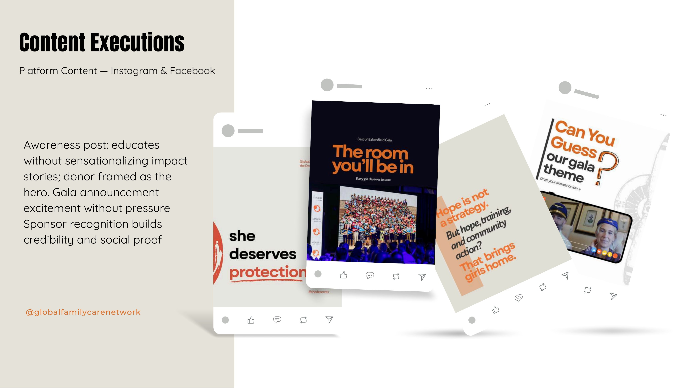
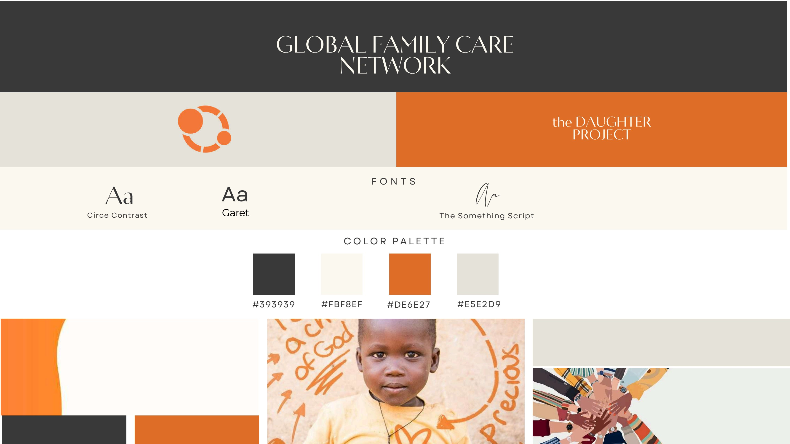
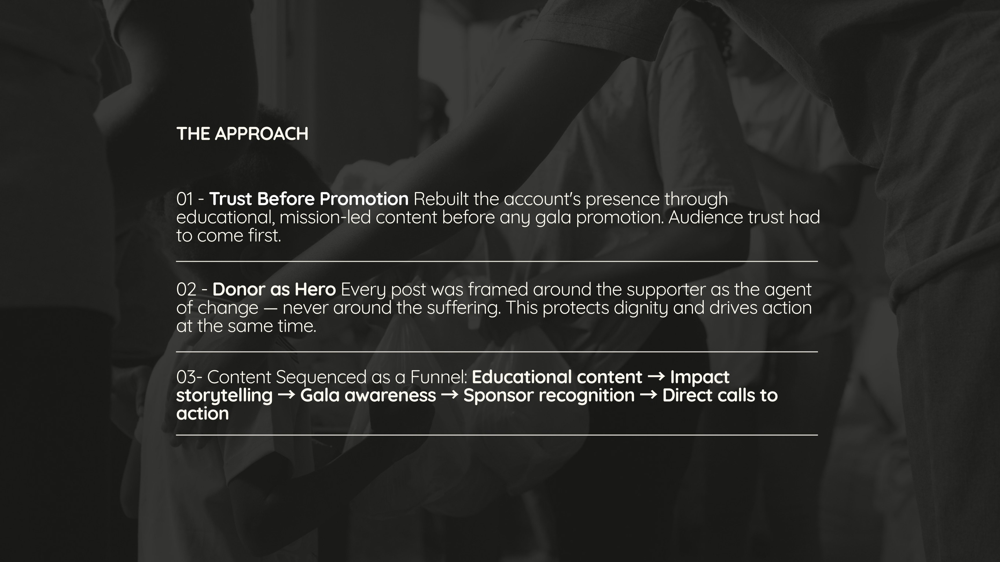
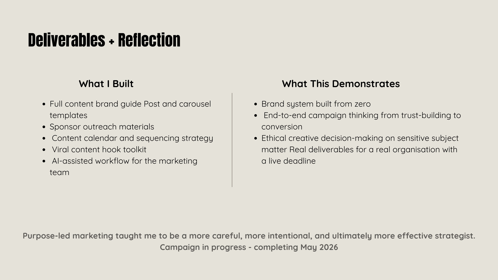

01
Campaign Strategy · Brand System · Social Revival
Mission-Led Campaign — GFCN
The Brief
GFCN is a US-based child protection and anti-trafficking charity whose social media had gone dormant — with a major fundraising gala approaching. I was brought in to rebuild the social presence, develop a brand voice system, and create a campaign strategy to drive gala support.
The Approach
Trust first, promotion second
- Trust before promotion. Rebuilt the account's presence through educational, mission-led content before any gala promotion — audience trust had to come first.
- Donor as hero. Every post was framed around the supporter as the agent of change, never around the suffering — protecting dignity and driving action at the same time.
- Content sequenced as a funnel. Educational content → impact storytelling → gala awareness → sponsor recognition → direct calls to action.
Deliverables
What I built
Full content brand guide
Post & carousel templates
Sponsor outreach materials
Content calendar & sequencing strategy
Viral content hook toolkit
AI-assisted workflow for the marketing team
What it demonstrates
Strategy with a conscience
- A brand system built from zero — voice, visual identity and platform strategy standardised across every channel.
- End-to-end campaign thinking, from trust-building through to conversion.
- Ethical creative decision-making on sensitive subject matter.
- Real deliverables for a real organisation with a live deadline.
Purpose-led marketing taught me to be a more careful, more intentional, and ultimately more effective strategist.
From the campaign
Brand System & Content



More
View all work →